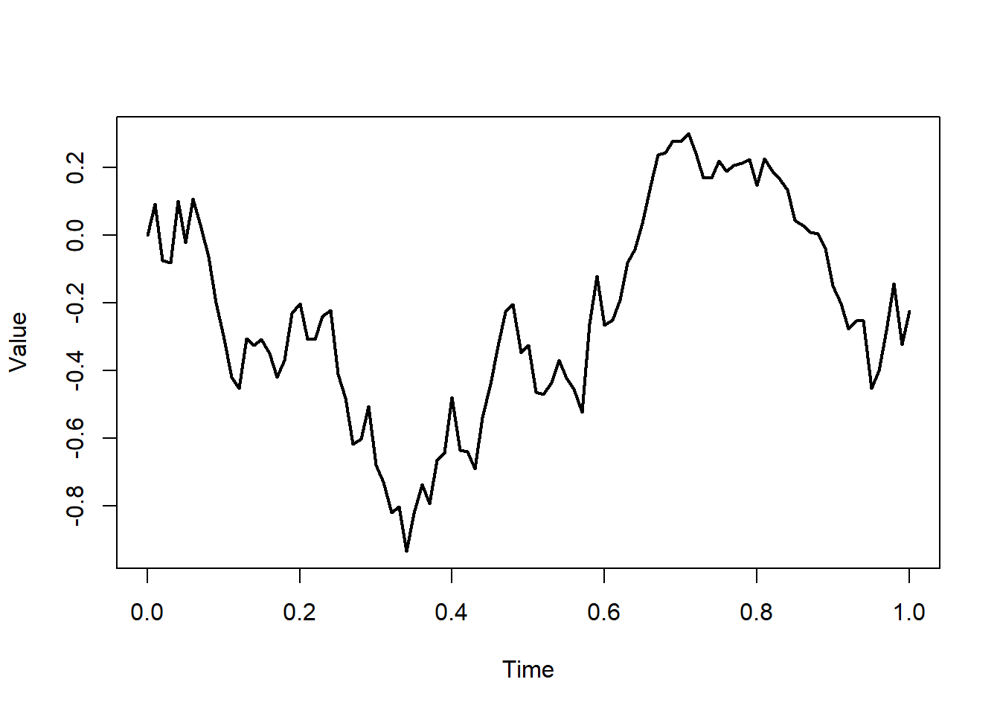

We use piping to create pipelines advantages: you can read the code like text: from top left to bottom right syntactically, |> means: take what is left of |> and use it as first argument on the right side less intermediate variables
Piping example
seq(from =0, to =1, by =0.01) |># fix time steps of evaluationrandom_walk() |># simulate random walkplot(type ="l", # plot resultsxlab ="Time",ylab ="Value",lwd =2)

More than one pipe can be combined. This allows to build more elaborate pipeline we make heavy use of these pipelines
Tasks ADMs and incompleteness (45 min)
Define age-depth models for different locations along the onshore-offshore gradient, and plot them.
How do they connect to the chronostratigraphic diagram and the sea level curve?
Examine how stratigraphic incompleteness and the number of hiatuses changes along the onshore-offshore gradient.
Generate histograms of hiatus durations at the different distances from shore.
Do you see any systematic changes?
These task (incl. the basin transect and Wheeler diagram) are in the material we send to you.
Includes template code and cheat sheets Go through the tasks, ask us any questions In 40 mins we discuss the results Participants presents Then 15 mins break
Results
Break (15 min)
Trait evolution
Traits are measurable characteristics of an organism
How do traits evolve in a lineage?
Modes of evolution
Stasis - no net change
Random walk - random accumulation of change
Ornstein-Uhlenbeck (OU) process - convergence towards an optimum
Question
How do stratigraphic biases change our perception of the mode of evolution?
Plot the different modes of evolution in the time domain.
What is their internal variation due to randomness (i.e., how much do results differ if you plot them multiple times)?
What is the biological meaning of the model parameters?
Transform the different modes of evolution into the stratigraphic domain and plot them.
Which modes are most/least affected by stratigraphic biases?
Do you see any systematic changes?
These task are in the material we send to you.
Includes template code and cheat sheets Keep the stratigraphic context in mind (Wheeler diagram, basin transect) Go through the tasks, ask us any questions In 40 mins we discuss the results Participants presents Then 15 mins break
Results
Break (15 min)
Niche modeling and last occurrences
Taxa track their preferred niche
Environmental conditions at a place change with time
Questions
How does ecology change fossil abundance?
How does stratigraphy influence extinction rate estimates?
Tasks ecology and last occurrences (45 min)
Ecology
Simulate an abundant taxon, and transform the fossil ages into the stratigraphic domain.
At which locations and stratigraphic heights do you observe peaks in fossil abundance?
With which stratigraphic effects are these peaks associated?
Define a niche for a taxon, and add the niche model to your pipeline.
How and why do your results change?
How could you misinterpret the results?
Tasks ecology and last occurrences (45 min)
Last occurrences
Simulate last occurrences based on the assumption of a constant rate of last occurrences and transform them into the stratigraphic domain.
Where do you observe clusters of last occurrences?
With what stratigraphic effects are these locations associated?
How would you misinterpret the results in the absence of stratigraphic information? Use your results to formulate a “stratigraphic null hypothesis” for clusters of last occurrences.
Results
Advanced usage
Other forward models
Other biological models (niches, trait evolution)
Other data structures (phylogenetic trees)
Contributors welcome!
References
Burgess, Peter. 2013. “CarboCAT: A Cellular Automata Model of Heterogeneous Carbonate Strata.”Computers & Geosciences 53: 129–40. https://doi.org/https://doi.org/10.1016/j.cageo.2011.08.026.
Hohmann, Niklas, Joël R. Koelewijn, Peter Burgess, and Emilia Jarochowska. 2024. “Identification of the Mode of Evolution in Incomplete Carbonate Successions.”BMC Ecology and Evolution 24 (1): 113. https://doi.org/10.1186/s12862-024-02287-2.
Patzkowsky, Mark E, and Steven M. Holland. 2012. Stratigraphic Paleobiology: Understanding the Distribution of Fossil Taxa in Time and Space. University of Chicago Press.